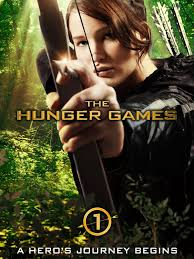

The Hunger Games Movies
The Hunger Games
The Hunger Games is the first movie that starts it all. In the movie there is a Capitol called Panem who is run by President Sow and is in control of the 12 districts. The Capitol holds an annual event called The Hunger Games for their entertainment. Katniss the protagonist of the movie volunteers to go into the deadly games instead of her sister Prim. Katniss goes alongside Peeta Mellark to survive a brutal arena against other competitors from other districts. She uses her resourcefulness, compassion, and survival skills to navigate the challenges, while also grappling with the relationship with Peeta. When inside the arena Katniss becomes a symbol of defiance agaisnt the Capitol's oppression, and her actions in the Games spark a revolution that will lead to greater conflicts in the sequels.
Catching Fire

Catching Fire picks up after the events from the first movie. Katniss and Peeta have won the games and go on to a tour to celebrate thier win. Although they won, Katniss left a spark for the rebellion in the last movie that leaves President Snow uneasy. President Snow wants to get rid of Katniss, but without getting his hands dirty, so he announces a Quarter Quell where the winners of the past games compete one more time and can kill Katniss in front of a whole audience. Katniss is scared and worried about Peeta because they both aren't going to survive. She asks her mentor to protect Peeta at all cost instead of her own being. There is a secret alliance form to protect Katniss in the area without her knowing, but it doesn't turn out like they hope.
Mockingjay PT.1

The Mockingjay movie is split into 2 parts. Mockingjay part 1 picks up on the rescue of Katniss by District 13, a district thouhgt to be destroyed. Katniss goes on to embrace her role as the face of the rebellion and is convinced to fight for the cause. She struggles with the relationships of her friends and loved ones, especially Peeta who is being captive and used as propaganda by the Capitol. While she struggles with the love triangle between her, Peeta, and Gale, she has to focus on her main mission to inspire the districts to rise up. She also struggles on beign manipulated by both sides and can't focus on what to do. At the end she finally decided what to do and helps her team rescue peeta and another tributes from the Capitol.
Mockingjay PT.2
Mockingjay part 2 is the fourh and final film of the triology. Katniss has now fully embraced her role as the symbol of revolution, The Mockingjay. As the other districts get ready to fight for their freedom, Katniss get ready to save her loved ones. Especially Peeta who has been brainwashed and used as a weapon against her. Katniss joins a strike team with Finnick and Peeta and is led by Gale. They encounter deadly traps just like in the games arena. In the end Katniss faces a difficult choice between revenge and her ultimate goal of peace. The end shows the aftermath of the revolution and the rebuilding of a new society. The final scene provides a hopeful glimpse into the future for Katniss, Peeta, and their friends.